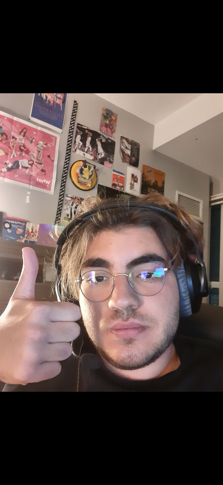

Ever since I first got introduced to sports, I was always intrigued by sport shows. In the beginning, when I did not have enough patience to sit through the whole games on tv, I would rely on highlight shows and post game talk shows in order to keep up with soccer and basketball. They were always a very reliable gateway into the certain sport I was gaining interest in, and remained useful even after I started watching full games. As I grew up and got into my teenage years, I started cultivating thoughts and opinions about the sports that I was watching, rather than simply observing them. These thoughts and opinions helped me gravitate towards the world of sports discourse in the media. From open web forums to nationally televised talk shows, sports discourse is a huge aspect of sports in today’s age, with more and more ways to participate and to contribute to this discussion being opened up. I really took a liking to the weekly talk shows of Colin Cowherd, Undisputed with Skip Bayless and Shannon Sharpe and First Take. Last summer, I had a gap on my schedule as school had ended, so I decided to launch my own sports talk show. It took inspiration from all the shows mentioned above and followed a very similar format in terms of its release schedule. I would put out episodes every weekday for a couple of weeks, leaving the weekend free to be able to watch all the sports content and report on it over the following week. It led me to step out of my comfort zone, as I had to buy professional equipment and learn how to run a podcast, from branding one to creating daily content for one.

Vasileios Tselios recording one of his podcasts (Vasileios Tselios)